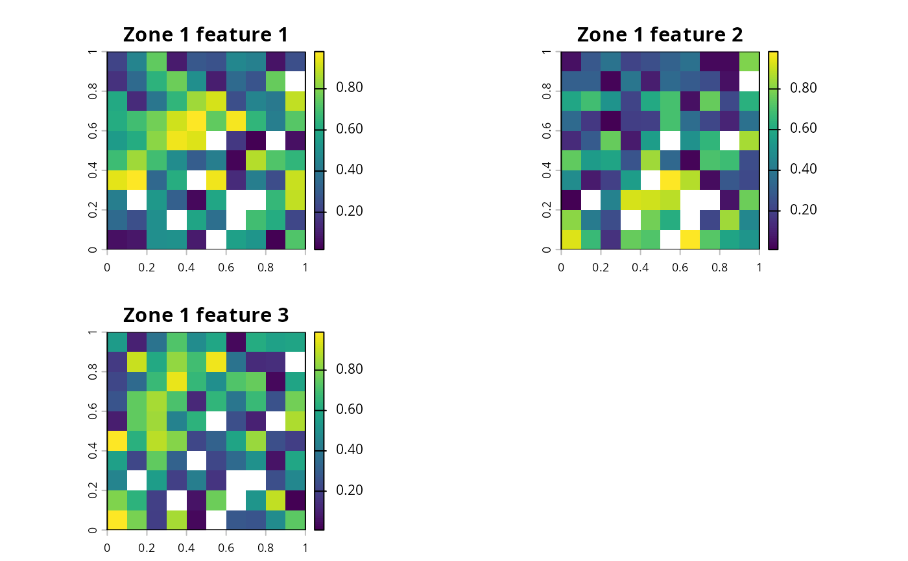

Organize data for multiple features for multiple management zones. Specifically, the data should describe the expected amount of each feature within each planning unit given each management zone. For example, the data could describe the occupancy (e.g., presence/absence), probability of occurrence, or abundance expected for each feature when each planning unit is allocated to a different zone.
Arguments
- ...
terra::rast()orcharacterobjects that pertain to the biodiversity data. See Details for more information.- zone_names
characternames of the management zones. Defaults toNULLwhich results in sequential integers.- feature_names
characternames of the features zones. Defaults toNULLwhich results in sequential integers.
Details
This function is used to store and organize data for use in a
conservation planning problem() that has multiple management
zones.
In all cases, the data for each zone is input as a separate argument.
The correct arguments depends on the type of planning unit data
used when building the conservation planning problem().
problem()will haveterra::rast()orsf::st_sf()planning unitsterra::rast()object can be supplied to specify the expected amount of each feature within each planning unit under each management zone. Data for each zone should be specified as separate arguments, and the data for each feature in a given zone are specified in separate layers in aterra::rast()object. Note that all layers for a given zone must have missing (NA) values in exactly the same cells.problem()will havesf::st_sf()ordata.frameplanning unitscharactervector containing column names can be supplied to specify the expected amount of each feature under each zone. Note that these columns must not contain any missing (NA) values.problem()will havesf::st_sf(),data.frame, ormatrixplanning unitsdata.frameobject can be supplied to specify the expected amount of each feature under each zone. Following conventions used in Marxan, thedata.frameobject should contain the following columns.- pu
integerplanning unit identifier.- species
integerfeature identifier.- amount
numericamount of the feature in the planning unit for a given zone.
Note that data for each zone are specified in a separate argument, and the data contained in a single
data.frameobject should correspond to a single zone. Also, note that data are not required for all combinations of planning units, features, and zones. The expected amount of features in planning units under management zones that are missing from the table are assumed to be zero.
See also
See problem() for information on using this function to generate
a prioritization with multiple management zones.
Examples
# \dontrun{
# load planning unit data
sim_pu_raster <- get_sim_pu_raster()
zone_1 <- simulate_species(sim_pu_raster, 3)
zone_2 <- simulate_species(sim_pu_raster, 3)
# create zones using two SpatRaster objects
# each object corresponds to a different zone and each layer corresponds to
# a different species
z <- zones(
zone_1, zone_2,
zone_names = c("zone_1", "zone_2"),
feature_names = c("feature_1", "feature_2", "feature_3")
)
print(z)
#> A zones object <ZonesSpatRaster/Zones>
#> • zones: "zone_1" and "zone_2" (2 total)
#> • features: "feature_1", "feature_2", and "feature_3" (3 total)
# plot the rasters for the first zone in the Zones object
plot(
z[[1]],
main = c("Zone 1 feature 1", "Zone 1 feature 2", "Zone 1 feature 3")
)

# note that the do.call function can also be used to create a Zones object
# this method for creating a Zones object can be helpful when there are many
# management zones
l <- list(
zone_1, zone_2,
zone_names = c("zone_1", "zone_2"),
feature_names = c("feature_1", "feature_2", "feature_3")
)
z <- do.call(zones, l)
print(z)
#> A zones object <ZonesSpatRaster/Zones>
#> • zones: "zone_1" and "zone_2" (2 total)
#> • features: "feature_1", "feature_2", and "feature_3" (3 total)
# create zones using character vectors corresponding to column names
# of a data.frame or Spatial object that contain the amount
# of each species expected different management zones
z <- zones(
c("spp1_zone1", "spp2_zone1"),
c("spp1_zone2", "spp2_zone2"),
c("spp1_zone3", "spp2_zone3"),
zone_names = c("zone1", "zone2", "zone3"),
feature_names = c("spp1", "spp2")
)
print(z)
#> A zones object <ZonesCharacter/Zones>
#> • zones: "zone1", "zone2", and "zone3" (3 total)
#> • features: "spp1" and "spp2" (2 total)
# }